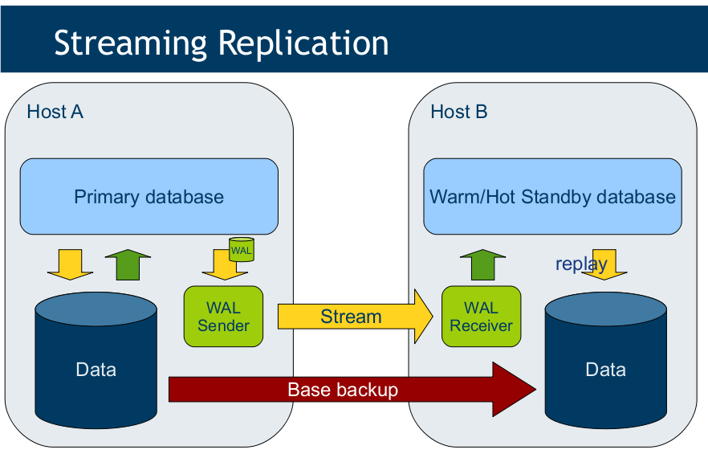
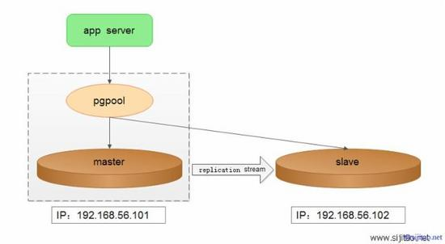
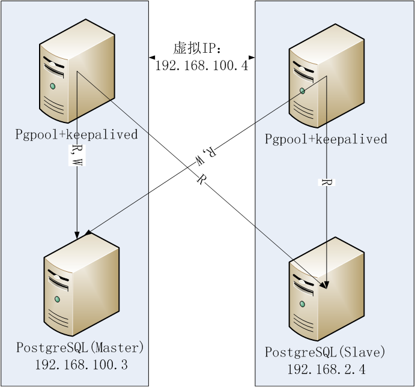
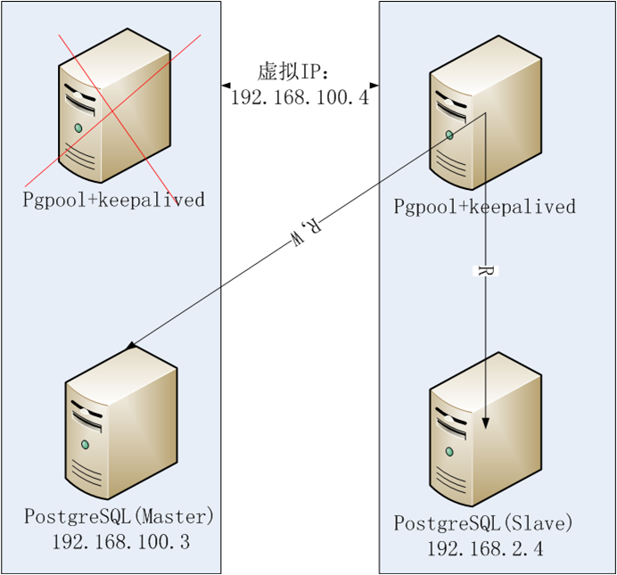
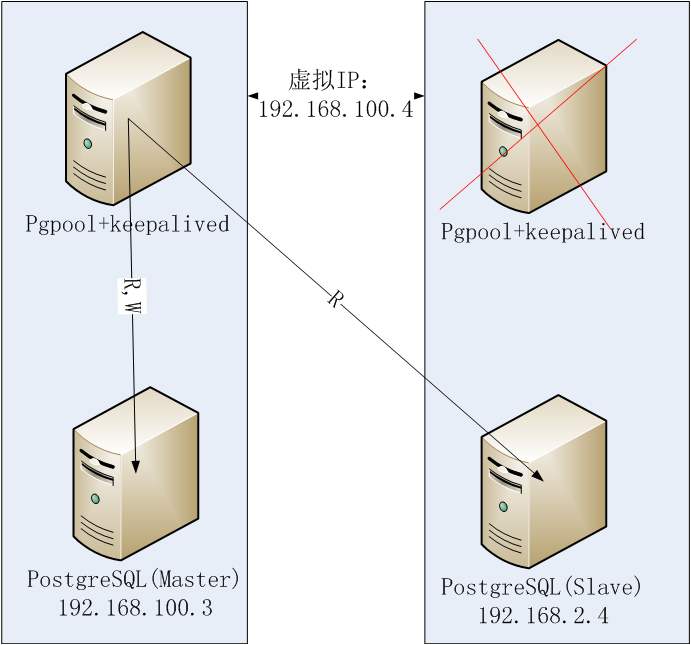
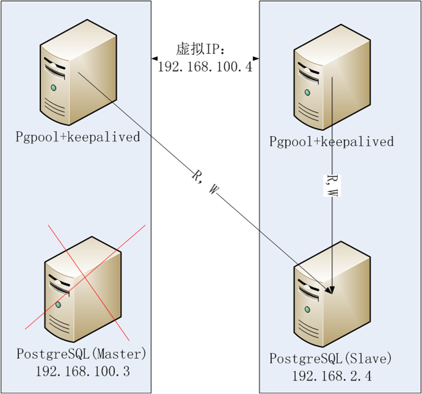
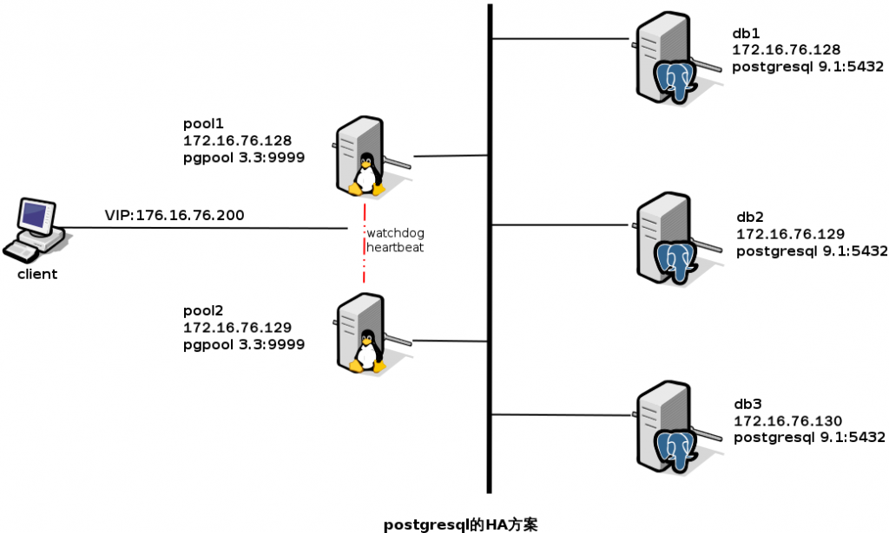

postgresql入门
Table of Contents
1 postgresql安装
- 网络方式安装
> sudo apt-get install postgresql 此过程，Linux系统中自动创建了一个postgres系统用户 postgresql数据库中自动创建了一个最高权限的postgres数据库用户
- 修改数据库中的postgres用户密码
默认安装好的postgresql中，创建了一个数据库超级用户postgres，此用户为空密码，需修 改下密码 > sudo -i > su - postgres > psql > ALTER USER postgres with PASSWORD '123456'; > \q //退出psql客户端
2 初始化设置
- 创建数据库和数据库用户
> su - postgres > psql > CREATE DATABASE iotadream; > CREATE USER hengjun WITH SUPERUSER PASSWORD '123456';//SUPERUSER：超级用户的意思，权限较高 > \q //退出psql客户端
3 开启数据库远程访问
- 编辑/etc/postgresql/9.5/main/postgresql.conf，允许任何主机来连接
vim /etc/postgresql/9.5/main/postgresql.conf listen_addresses = '*'
- 编辑/etc/postgresql/9.5/main/pghba.conf为来连接的用户和数据库分配权限
4 常用数据库操作
- 连接命令
psql -U hengjun -h 127.0.0.1 iotadream
- 查看数据库
\l
- 查看数据库表
\dt
- 退出
\q
- 表中插入数据
INSERT INTO table_name (列1, 列2,...) VALUES (值1, 值2,....) INSERT INTO company (id, name, age) VALUES (9, 'abb9', 9)
- 清空表
delete from tablename delete from company;
5 postgresql高可用性HA(High Available)
5.1 HA相关名词解释
- HA
HA: High Available，高可用性
- VIP / FLOAT IP
VIP：Virtual IP Addres，虚拟ip，通常也俗称浮动IP
- Hot standby
Hot standby：双机热备 master挂了，slave顶上
- Cluster
Cluster: 集群 1台挂了，n-1台可以工作
- LB
LB：Load Balance, 负载均衡
5.2 HA相关软件
- Heartbeat/KeepAlived
管理vip/浮动ip，监控服务的
- pg-poolII
pg连接池管理 流复制 双机热备/负载均衡 内置了看门狗(watchdog)实现了类似 Heartbeat/KeepAlived的功能
- pg原生流复制
master:可以读写 slave:只能读 master:坏了呢？

- 双机一
pg_pool管理主从的切换 这种做法有没有问题？

- 双机二
合理的双机做法 两台机器不够怎么办？想每台机器都可以读写呢？




- 集群
集群实现负载均衡，每台机器都可以读写 负载均衡算法： 1 轮询（一个挨着一个） 2 随机 3 压力（硬件配置不一样）

5.3 组网结构
主机IP 主机名 部署应用 192.168.161.128 IOTA-001 db-node1 & pg-pool1 192.168.161.129 IOTA-002 db-node1 & pg-pool2 192.168.161.130 IOTA-003 db-node3
5.4 主机名配置
- 192.168.161.128主机
vim /etc/hostname IOTA-001
vim /etc/hosts 192.168.161.128 IOTA-001 192.168.161.129 IOTA-002 192.168.161.130 IOTA-003
- 192.168.161.129主机
vim /etc/hostname IOTA-002
vim /etc/hosts 192.168.161.128 IOTA-001 192.168.161.129 IOTA-002 192.168.161.130 IOTA-003
- 192.168.161.130主机
vim /etc/hostname IOTA-003
vim /etc/hosts 192.168.161.128 IOTA-001 192.168.161.129 IOTA-002 192.168.161.130 IOTA-003
5.5 postgresql部署
每一个数据库主机节点(192.168.161.128,192.168.161.129,192.168.161.130)上都要部署
- 192.168.161.128
sudo apt-get install postgresql
- 192.168.161.129
sudo apt-get install postgresql
- 192.168.161.130
sudo apt-get install postgresql
5.6 pg-poolII的部署
pg-poolII主备节点(192.168.161.128,192.168.161.129)上都要部署
- 192.168.161.128
// root用户脚本署部 # ./pgpool2.sh mkdir /var/run/pgpoo lapt-get install arping
配置主机的pgpool vim /usr/local/pgpool2/etc/pgpool.conf use_watchdog = on // 开启看门狗x wd_hostname = 'IOTA-001' // pgpool2的备机是它自己的主机名 delegate_IP = '192.168.161.138' // vip 即 float ip heartbeat_destination0 = 'IOTA-002' // 对方的主机名 other_pgpool_hostname0 = 'IOTA-002' other_pgpool_port0 = 9999 # 修改进程id文件的位置 pid_file_name = '/run/pgpool.pid' # 日志目录 logdir = '/var/log' # enable_pool_hba = on # 数据复制和负载均衡 listen_addresses = '*' // 任意客户端都可以连接 replication_mode = on load_balance_mode = on 修改网卡接口名(eth0,ens33) // 所有eth0网卡名的地方换成你机器的网卡名 backend_hostname0 = 'IOTA-001' // 主节点 backend_hostname1 = 'IOTA-002' // 其他备用节点 backend_port1 = 5433 backend_weight1 = 1 backend_data_directory1 = '/var/lib/pgsql/data' backend_flag1 = 'ALLOW_TO_FAILOVER' ./pg_md5 -p //错误 pcp.confiog ./pg_md5 原始密码 poo_passwd 文件 ./pg_md5 -m -u hengjun 123456 vim pool_passwd hengjun:e10adc3949ba59abbe56e057f20f883eDETAIL
- 192.168.161.129
// root用户脚本署部 # ./pgpool2.sh root用户脚本署部 mkdir /var/run/pgpool
配置备机的pgpool vim /usr/local/pgpool2/etc/pgpool.conf use_watchdog = on // 开启看门狗 wd_hostname = 'IOTA-002' // pgpool2的备机是它自己的主机名 delegate_IP = '192.168.161.138' // vip 即 float ip heartbeat_destination0 = 'IOTA-001' // 对方的主机名 other_pgpool_hostname0 = 'IOTA-001' // 对方的主名机 other_pgpool_port0 = 9999 other_wd_port0 = 9000 # 修改进程id文件的位置 pid_file_name = '/run/pgpool.pid' # 日志目录 logdir = '/var/log' # # enable_pool_hba = on # 数据复制和负载均衡 listen_addresses = '*' // 任意客户端都可以连接 replication_mode = on load_balance_mode = on 修改网卡接口名(eth0,ens33) // 所有eth0网卡名的地方换成你机器的网卡名 ./pg_md5 -p //错误 pcp.confiog ./pg_md5 原始密码 poo_passwd 文件 ./pg_md5 -m -u hengjun 123456
vim pool_hba.conf ### host all all 0.0.0.0/0 md5
5.7 常用命令
1 登陆pg-pool psql -U dbuser -h float_ip dbname -p 9999 psql -U hengjun -h 192.168.161.138 iotadream -p 9999 2 查看节点状态 show pool_nodes; //恢复down的节点 ./pcp_attach_node -d -h IOTA-001 -U hengjun -n 0 ./pcp_attach_node -d -h IOTA-001 -U hengjun -n 1 ./pcp_attach_node -d -h IOTA-001 -U hengjun -n 2 //最后-n 是node编号，show pool_nodes查看